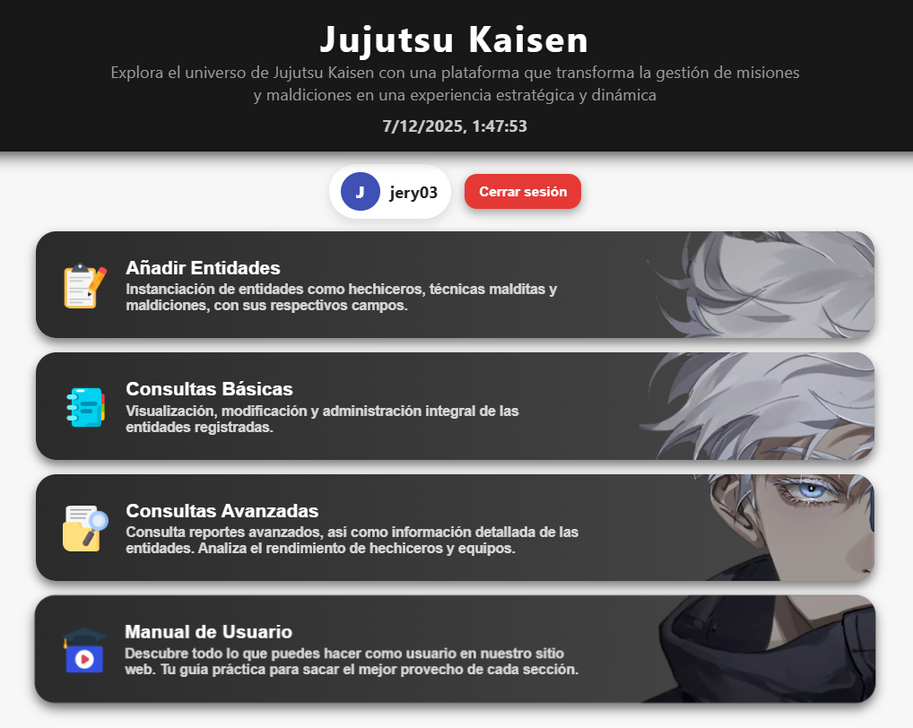
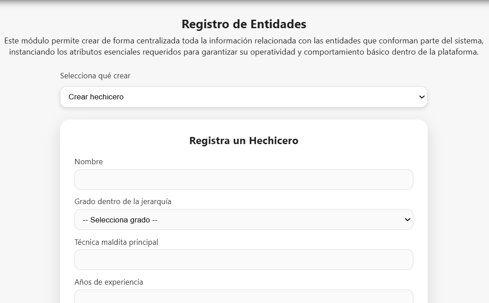
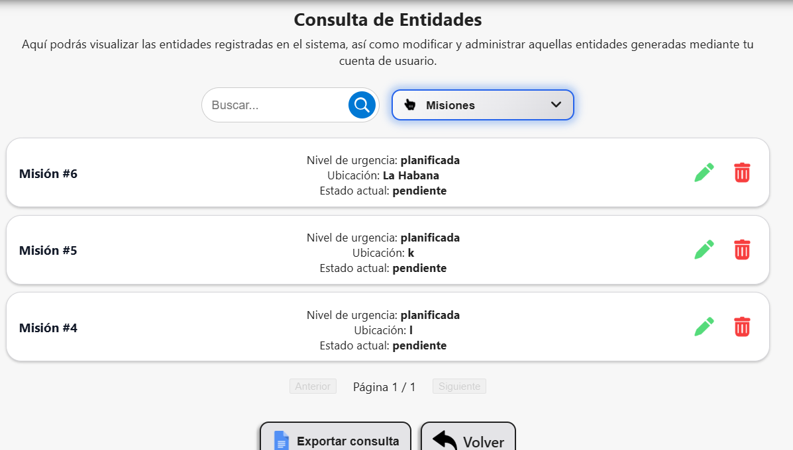
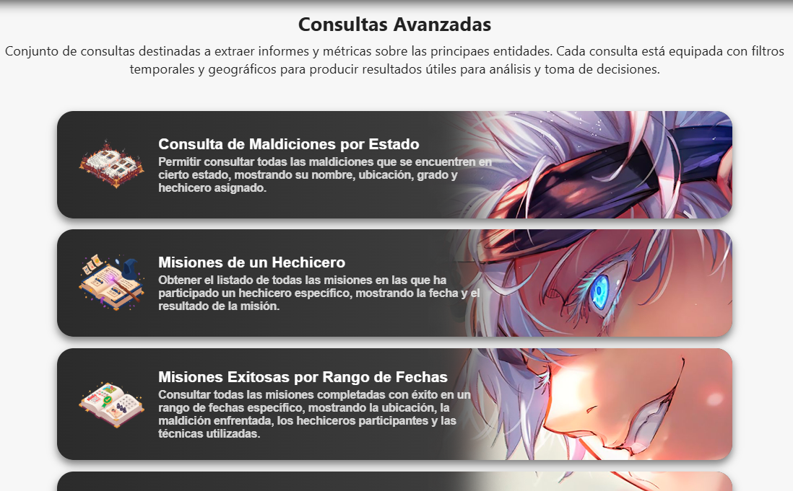
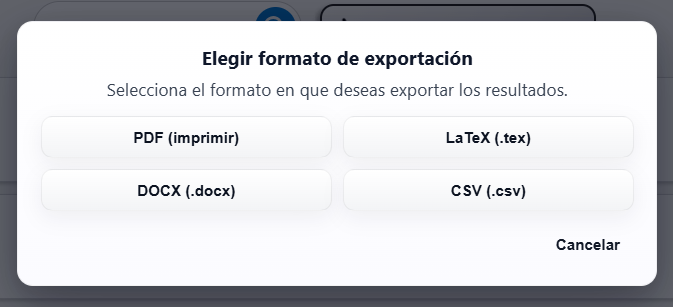

Manual de Usuario
Descubre todo lo que puedes hacer como usuario en nuestro sitio web. Tu guía práctica para sacar el mejor provecho de cada sección.
¿Cuál es la temática de este sitio web?
El objetivo de esta aplicación web es gestionar misiones y el registro de maldiciones en el universo de Jujutsu Kaisen. El sistema administra el inventario de hechiceros, misiones asignadas, registro de maldiciones exorcizadas, historial de combates y técnicas malditas utilizadas.
La automatización busca optimizar la asignación de misiones y el seguimiento de amenazas, reduciendo el riesgo de descoordinación en situaciones críticas. La organización de hechiceros se estructura por grados de poder y experiencia, permitiendo que los superiores supervisen, asignen y analicen el desempeño de los equipos y participantes.
Las misiones se clasifican por urgencia y nivel de peligro, involucrando múltiples participantes y recursos que deben coordinarse con precisión. El sistema registra información relevante de maldiciones, hechiceros, misiones, técnicas y traslados, permitiendo un análisis integral y en tiempo real de las operaciones.
Así, se facilita la toma de decisiones estratégicas, la evaluación de rendimiento individual y colectivo, y la optimización de recursos para asegurar respuestas rápidas y efectivas ante emergencias.
¿Cuáles son los tipos de consultas?
Esta plataforma te permite gestionar misiones y el registro de maldiciones en el universo de Jujutsu Kaisen. Podrás:
- Consultar todas las maldiciones según su estado, ubicación, grado y hechicero asignado.
- Ver el historial de misiones de cada hechicero, incluyendo fechas y resultados.
- Buscar misiones completadas con éxito en rangos de fechas, mostrando detalles de participantes y técnicas usadas.
- Obtener reportes de efectividad de técnicas por hechicero, clasificadas como Alta, Media o Baja.
- Listar los hechiceros más exitosos por nivel de misión y región de acción.
- Visualizar relaciones entre hechiceros y sus discípulos o equipos, junto con el conteo de misiones exitosas y fallidas.
- Comparar el rendimiento de hechiceros de grado medio y alto en misiones críticas contra maldiciones especiales.
- Exportar cualquier resultado mostrado a PDF y ordenar columnas según tus intereses.
El sistema optimiza la asignación de misiones, el seguimiento de amenazas y la coordinación entre roles, asegurando respuestas rápidas y efectivas en situaciones críticas.
¿Cómo navegar y aprovechar la plataforma?
La interfaz está diseñada para ser intuitiva y accesible. En el menú principal puedes acceder a las secciones de registro, consulta y administración. Cada sección cuenta con formularios claros y filtros avanzados para personalizar tus búsquedas y reportes.
- Utiliza los filtros para encontrar información específica sobre misiones, hechiceros o maldiciones.
- Accede a los detalles de cada entidad para editar, eliminar o analizar su historial.
- Exporta los resultados a PDF para compartir o archivar información relevante.
- Consulta los tutoriales y ayudas contextuales para aprender a usar cada función.
El sistema está en constante actualización para incorporar nuevas funcionalidades y mejorar la experiencia de usuario. Si tienes sugerencias, puedes enviarlas a través del formulario de contacto.
¿Más detalles?
Nombre del Software
Jujutsu Kaisen Mission Management
Autores
- Ronald Cabrera Martínez (Telegram: @RonaldCbMtnz)
- Alex Moreno Rodríguez (Telegram: @Alexby9511)
- Josué J. Senarega Claro (Telegram: @JosuJSC)
- Jery Rodríguez Fernández (Telegram: @jery345Pi)
Objetivos del Proyecto
- Gestionar misiones y recursos de hechiceros de manera eficiente.
- Facilitar el registro, consulta y seguimiento de misiones.
- Proveer reportes para la toma de decisiones.
Requerimientos Técnicos
- Procesador de al menos 2 núcleos (Intel i3 o equivalente).
- 2 GB de memoria RAM (recomendado 4 GB).
- Resolución de pantalla mínima de 1366 × 768 px.
- Conexión estable a internet.
- Navegador web compatible con estándares modernos
Requerimientos de Software
- Node.js v16 o superior
- Navegador web moderno (Chrome, Firefox, Edge)
- Git (opcional, para desarrollo)
Instalación de la Aplicación
- Descargar el repositorio desde GitHub.
- Ejecutar
npm installen la carpeta raíz. - Configurar los archivos en
config/según sea necesario. - Ejecutar
npm startpara iniciar el servidor. - Abrir
index.htmlen el navegador.
Opciones del Sistema
- Inicio: Pantalla principal con acceso rápido a las funciones principales.

- Registro de Entidades: Permite crear nuevas entidades como hechiceros, técnicas, maldiciones y recursos.

- Consulta Básicas: Visualización y modificación de las entidades registradas.

- Consulta Avanzada: Búsqueda y filtrado de misiones.

- Exportar Datos: Exporta información en PDF, LaTeX, DOCX o CSV.

Preguntas Frecuentes (FAQ)
- ¿Puedo exportar los datos? Sí, desde la sección de resultados puedes exportar en PDF, LaTeX, DOCX o CSV.
- ¿Cómo reporto un error? Contacta a los autores vía Telegram o abre un issue en GitHub.
- ¿Cómo se clasifican los hechiceros? Por grados, desde el grado 4 (más bajo) hasta el grado especial (más alto), según experiencia y poder.
- ¿Qué sucede si una misión fracasa exorcizando una maldición? El sistema registra el resultado y permite analizar causas, mejorar estrategias y lanza otra misión automáticamente para exorcizar dicha maldición.
- ¿Qué recursos pueden usar los hechiceros? Herramientas, objetos especiales y apoyo de otros miembros del equipo, según la misión y el tipo de maldición.
- ¿Cómo se asignan las misiones? El sistema optimiza la asignación según el grado, experiencia y disponibilidad de los hechiceros, así como el nivel de amenaza.
Glosario
- Hechicero: Un hechicero es un combatiente especializado en exorcizar maldiciones, clasificado por grado y experiencia. Participa en misiones, usa técnicas malditas, registra resultados y colabora con personal de soporte para coordinar operaciones, optimizar recursos y enfrentar amenazas sobrenaturales.
- Misión: Una misión es una tarea asignada a uno o más hechiceros para exorcizar maldiciones, completar objetivos específicos y colaborar con otros miembros del equipo. Las misiones se registran en el sistema para evaluar el desempeño, optimizar la asignación de recursos y mejorar la coordinación operativa.
- Recurso: Un recurso es cualquier elemento, objeto o herramienta que puede ser utilizado por los hechiceros en misiones para mejorar sus capacidades, facilitar el cumplimiento de objetivos o apoyar la gestión operativa. Registrar recursos permite optimizar su asignación y disponibilidad en el sistema.
- Técnica: Una técnica maldita es una habilidad sobrenatural única utilizada por los hechiceros para combatir maldiciones, caracterizada por su tipo, nivel de dominio, efectividad en combate y condiciones específicas de uso; su registro en el sistema permite evaluar el desempeño del hechicero, optimizar la asignación de misiones y mejorar la coordinación operativa en situaciones críticas.
- Maldición: Una maldición consiste en una entidad sobrenatural clasificada por grado y tipo, que representa una amenaza para los humanos. Se registra con datos como ubicación, estado, fecha de aparición y el hechicero asignado para su exorcismo, permitiendo gestionar misiones y evaluar riesgos de forma precisa y coordinada.
Contacto y Soporte
Para soporte técnico, contacta a los autores por Telegram o revisa la documentación en el repositorio de GitHub.